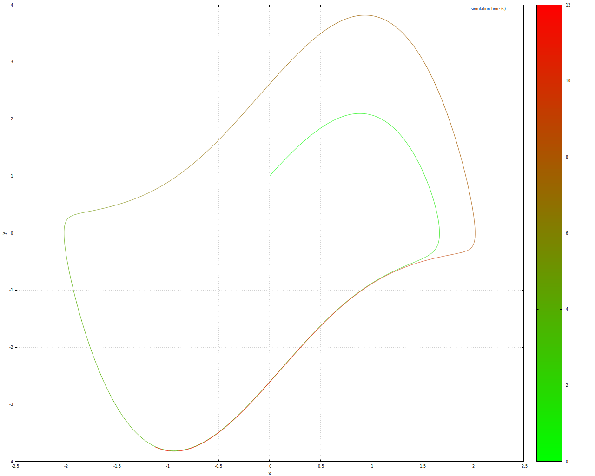
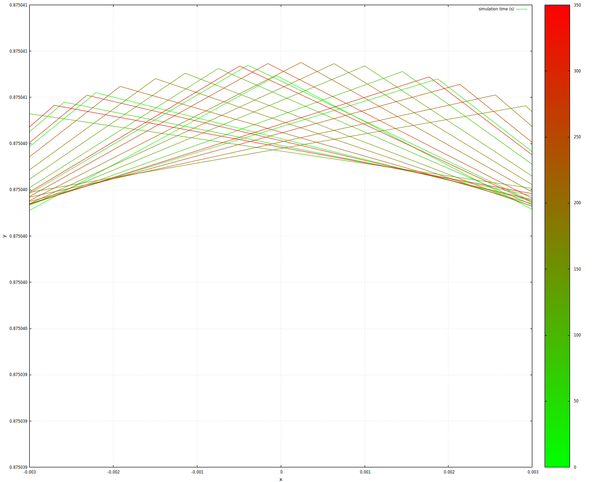
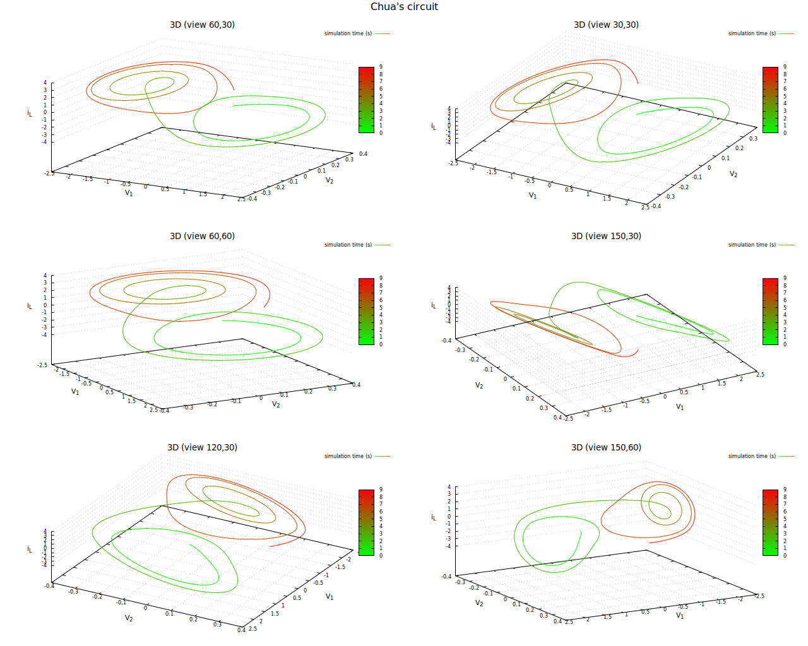
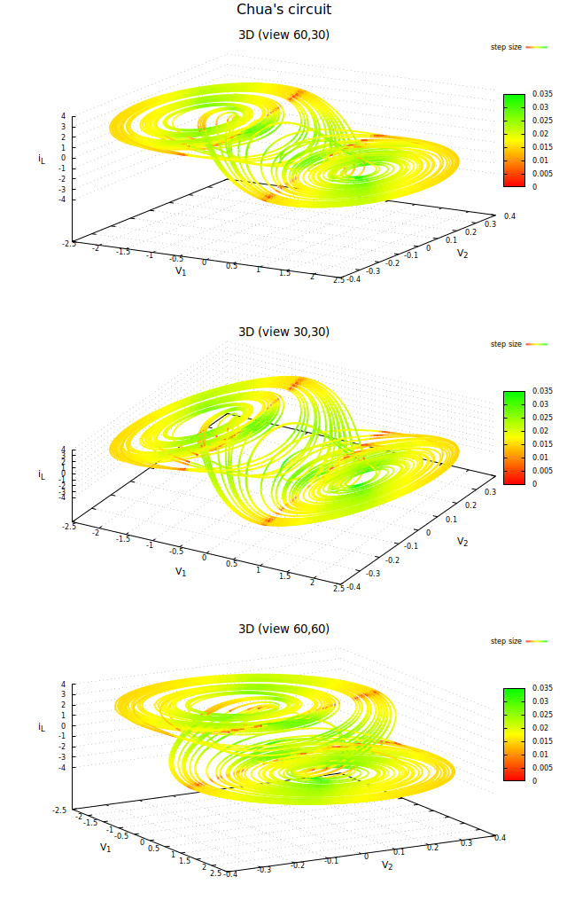

Ich wollte nach längerer Zeit wieder einmal in die Welt chaoticher Systeme eintauchen und habe mich dazu mit zwei Systemen beschäftigt...
Das Van-der-Pol-System ist ein relativ einfaches zweidimensionales System, das aus einer einzelnen Differentialgleichung zweiter Ordnung besteht.

Phasendiagramm Van-derPol-SystemIn dieser Abbildung kann man noch nicht so richtig erkennen, warum es dieses System auf die Liste der chaotischen geschafft hat - extrem hineingezoomt kann man aber ein ergodisches Verhalten zumindest erahnen:

Phasendiagramm Van-derPol-System - stark vergrößerter AusschnittHier könnte man natürlich bereits wieder zweifeln, ob dieses Verhalten nicht ein Artefakt des benutzten numerischen Verfahrens darstellt...
Das zweite System, mit dem ich mich beschäftigt habe ist eigentlich kein System, sondern eine Klasse von solchen.

Dreidimensionale Darstellung des Phasenraums eines Chua-SystemsWunderbarerweise sehen wir hier einen Double-Scroll-Attraktor, wie ihn zum Beispiel auch das Lorenz-System aufweist.
Interessant ist dieses System auch aus einem anderen Grund: In der vorhergehenden Graphik war die Darstellung eigentlich vierdimensional: die Farbe zeigte den zeitlichen Verlauf der Berechnung an. Benutzt man statt dessen als vierte Dimension die Schrittweite des für die Berechnung benutzten numerischen Verfahrens zur Lösung von Differentialgleichungen (ich habe eines mit adaptiver Schrittweitensteuerung benutzt), so erkennt man Hotspots - Bereiche, in denen die Schrittweite besonders klein gewählt wurde (rot dargestellt). Lässt man das System für eine längere Zeitspanne berechnen und wählt man die Strichstärke der Visualisierung ein klein wenig größer, ergeben sich fast schon Flächen, auf denen diese Hotspots an gerade Linien oder Streifen erinnern:

Dreidimensionale Darstellung des Phasenraums eines Chua-Systems mit farbig kodierter Schrittweite des numerischen VerfahrensDies kann man sich auch intuitiv hervorragend erklären: Dort knicken die beiden Scheiben in die Übergangsphase ab - dort ist also auch zu erwarten, dass die Krümmung der Trajektorien besonders groß wird. Da numerische Verfahren den Verlauf der exakten Lösung immer durch stückweise lineare Segmente approximieren würde dort der Fehler einer solchen Approximation daher besonders groß. Verfahren mit adaptiver Schrittweitensteuerung schätzen den Fehler und passen damit die Schrittweite an - daher ist in Gebieten relativ großer Krümmung eine relativ kleine Schrittweite zu erwarten!
Tags


Neueste Artikel
-
 Timestamping Server Projekt
Timestamping Server Projekt
Nach meinen Anstrengungen, die Expect Dialog CA für den Einsatz als Unterstützung beim Anbieten von Timestamping-Diensten fit zu machen, habe ich nach Lösungen gesucht, die es mir erlauben, die dadurch entstehenden Konfigurationen und sonstigen Materialien (Schlüssel, Zertifikate,...) einem Praxistest zu unterziehen
Weiterlesen... -
8TB Raid5 mit Raspberry Pi
Ich habe mir neulich überlegt, ob man einen Pi als Raid benutzen könnte - aber nicht mit dem ewig gleichen Setup mit 4 USB-Sticks...
Weiterlesen... -
Expect-Dialog-CA Version 2.0.0
CA-Management-Lösung in Version 2.0.0 fertiggestellt und auf Github verfügbar
Weiterlesen...
Manche nennen es Blog, manche Web-Seite - ich schreibe hier hin und wieder über meine Erlebnisse, Rückschläge und Erleuchtungen bei meinen Hobbies.
Wer daran teilhaben und eventuell sogar davon profitieren möchte, muß damit leben, daß ich hin und wieder kleine Ausflüge in Bereiche mache, die nichts mit IT, Administration oder Softwareentwicklung zu tun haben.
Ich wünsche allen Lesern viel Spaß und hin und wieder einen kleinen AHA!-Effekt...
PS: Meine öffentlichen GitHub-Repositories findet man hier.